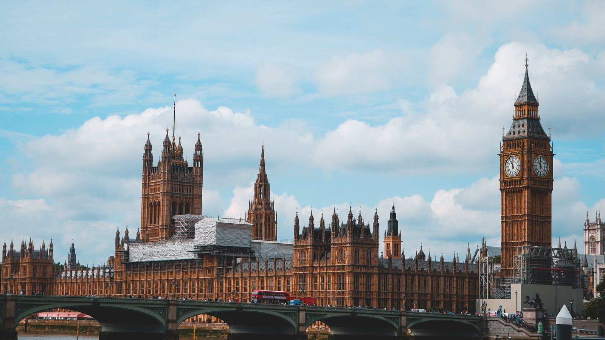

Barut Komplosu: Bir Suikast Girişimi Nasıl Sokak Şenliğine Dönüştü?
5 Kasım 1605’in ilk saatleri, Londra. Parlamento binasının altındaki bir bodrumda, odun yığınlarının arkasında bir adam duruyor. Yanında bir saat, yavaş yanan fitiller ve kibrit var. Kendini “John Johnson” diye tanıtıyor. Gerçek adı Guy, yani İspanya’da kullandığı adıyla Guido Fawkes. Birkaç saat sonra Kral I. James parlamentoyu açmak için o binaya gelecekti. Bodrumda ise 36 varil barut bekliyordu. Bugün İngiltere’de bu gece havai fişeklerle, şenlik ateşleriyle ve çocuklu ailelerle kutlanıyor. Ama ben bu yazıda şunu soruyorum: kutladığımız şey gerçekte neydi, bu hikâyede gerçekten kim ne yapmıştı ve bir komplo yüzyıllar sonra nasıl bir şenliğe dönüşebilir?

Neden bir grup insan Parlamentoyu havaya uçurmak istedi?
Hikâyeyi anlamak için önce bir hayal kırıklığını anlamak lazım. Kraliçe I. Elizabeth ölünce tahta I. James çıktı. İngiliz Katolikleri onun döneminde daha hoşgörülü bir yönetim umuyordu. Bunun makul gerekçeleri vardı: James’in eşi Danimarkalı Anne Katolikti. Ama 1604’ün başında James, Parlamento önünde Katolik inancından “nefret ettiğini” söyledi ve bütün Cizvit ve Katolik rahiplerin ülkeyi terk etmesini emretti. Umut kırılmıştı.
Bir başka kaynak, komplocuların ayrıca James’in Katolik İspanya’yla yaptığı barış anlaşmasına öfkeli olduğunu söylüyor. Yani bu kişiler sıradan bir isyancı topluluğu değil, İngiltere’nin Katolik soyluları arasından gelen, bir tarafta inanç diğer tarafta siyasi hayal kırıklığı taşıyan insanlardı. Komplonun beyni de bir cahil sokak kavgacısı değil, devrin tanınmış bir ailesinden gelen Robert Catesby’ydi. Hatta English Heritage’ın dikkat çektiği gibi, Catesby daha önce 1601’deki Essex isyanına da katılmıştı.
Komplonun mimarı: Fawkes değil, Catesby
Popüler hafızada komplonun yüzü Guy Fawkes. Ama bütün kaynaklar aynı noktada birleşiyor: lider Robert Catesby’ydi. Fawkes ise patlayıcılardan sorumlu uzmandı. Yorkshire’da doğmuş, Cizvit eğitimli okula gitmiş, yaklaşık on iki yıl Hollanda’da İspanya ordusunda askerlik yapmıştı. Bir kaynağa göre madencilik ve barut deneyimi sayesinde tünel ve patlayıcı konusunda bilgiliydi. Bu uzmanlığı yüzünden gruba çağrıldı. İspanya’daki yıllarında “Guido” adını kullanmıştı.
Catesby’nin planı şuydu: Parlamentonun açılışında kralı ve soyluları öldürmek, kralın dokuz yaşındaki kızı Prenses Elizabeth’i kaçırıp kukla bir kraliçe olarak tahta çıkarmak ve Midlands bölgesinde bir isyan başlatmak. Bir kaynak, planın kralın büyük oğlu Prens Henry’yi de hedef aldığını yazıyor. Bu ayrıntı da planın ne kadar köktenci olduğunu gösteriyor.
Fawkes’in Avrupa yılları: Bir askerin yolu
Fawkes’in biyografisi, komplonun neden bu kadar planlı yürütüldüğünü biraz açıklıyor. Bianet’in aktardığına göre York doğumluydu ve 1578’de St Peter’s Okulu’nda eğitim gördü, bu okulun Cizvit bağlantılı olduğu söyleniyor. Üvey babasının Katolik etkisiyle yetiştiği sanılıyor. Yirmi bir yaşında mirasını satıp Katolik birliklere katıldı ve yaklaşık on iki yıl Hollanda’da askerlik yaptı. 1603’te Calais kuşatması sırasında İspanya Kralı II. Philip’ten İngiltere’deki Katoliklere yardım istedi ve Christopher Wright’la tanıştı. 25 Nisan 1604’te Thomas Wintour’la birlikte İngiltere’ye döndü ve Catesby’yle Duck and Drake Hanı’nda buluştu. Bu kronolojiyi bir kaynaktan aldım, diğer kaynaklarla tam örtüşmeyen noktalar olabilir.
Bence burada dikkat çekici olan, komplonun bir iç siyasi öfkenin değil, Avrupa’nın dinî savaşlarının bir uzantısı olması. Fawkes yıllarca Hollanda’da, Katolik İspanya ile Protestanlar arasındaki bir savaşın içinde yaşamış biriydi. Bu yüzden İngiltere’deki durumu da bir yerel sorun değil, daha büyük bir mücadelenin parçası olarak görmüş olması mantıklı. Bunu bir yorum olarak ekliyorum.
Bir tünel, bir bodrum, kırk varile yakın barut
Komplocular işe önce Parlamento binasının altından bir tünel kazarak başlamak istedi, ama bu iş yürümedi. Bir kaynak, Thomas Percy’nin Mayıs 1604’te Lordlar Kamarası’nın bitişiğinde bir yer kiraladığını, kazı işinin veba salgınları ve Parlamento’nun defalarca ertelenmesi yüzünden aksadığını aktarıyor. Bir başka kaynak, 1605 Mart’ında doğrudan Lordlar Kamarası’nın altındaki bir bodrumun kiralanabilir hâle geldiğini belirtiyor. Binanın yıllar içinde defalarca genişletilip değiştirilmesi, güvenliğin zayıf kalmasına yol açmıştı. Bu bodrum, tam aradıkları şeydi.
Mart 1605’e gelindiğinde 36 varil barut, odun yığınlarının altına gizlenmişti. Barutun miktarı kaynaklarda farklı: bir kaynak toplam 1.800 pound (yaklaşık 800 kilogram), başka bir kaynak ise yalnızca “36 varil” diyor. Bir kaynakta ise yakalandığında Fawkes’in yanında “yirmi varil” bulunduğu yazıyor. Bu çelişkiyi yazının sonunda not ettim. Önemli olan şu: 2005’te bir İngiliz televizyonu, orijinal miktarda barutla bir kopya oda kurarak yaptığı deneyde, patlamanın odadaki herkesi öldüreceği sonucuna ulaştı. Yani bu bir göz boyama değil, ölümcül ciddi bir plandı.
Neden bu kadar kolay içeri girdiler?
Hikâyenin pratik tarafı bence en şaşırtıcı yanı: bir grup insan, ülkenin yasama merkezinin altına tonlarca barut taşıdı ve yıllarca fark edilmedi. English Heritage bunun nedenini binanın yapısıyla açıklıyor: Parlamento binası defalarca genişletilmiş ve değiştirilmişti, bu da güvenlik açıklarına yol açmıştı. Mart 1605’te Lordlar Kamarası’nın altındaki bir bodrum kiralanabilir hâle geldi ve Fawkes “John Johnson” adıyla bu yeri kullanmaya başladı. Yani gerçek bir sızma yöntemi yoktu: sadece bir kiralama sözleşmesi, bir sahte ad ve odun yığınları.
Bu, bugünün güvenlik tartışmalarına da ilginç bir ayna tutuyor. En büyük güvenlik açığı çoğu zaman karmaşık bir teknik zafiyet değil, bir idari boşluktur: kimin neyi kiraladığına bakmayan bir kayıt sistemi, kimin bodruma girdiğini kontrol etmeyen bir görevli. Bu yorum bana ait, kaynaklarda böyle bir genelleme yok. Ama komplonun ancak bir ihbar mektubuyla bozulması, sistemin kendi başına bunu yakalayamadığını da gösteriyor.
Bir mektup, bir şüphe
Plan uygulanmadan önce, 26 Ekim 1605’te Lord Monteagle’a isimsiz bir mektup ulaştı. Mektup, Parlamento’ya gitmemesini öneriyordu ve “korkunç bir darbe alacakları” uyarısını içeriyordu. Bir kaynağa göre mektubu büyük olasılıkla Francis Tresham yazmıştı. Tresham, Monteagle’ın kayınbiraderiydi. Monteagle bu mektubu hemen kralın baş bakanı Robert Cecil’e iletti.
Bundan sonrası hikâyenin en çok tartışılan kısmı. Cecil, mektubu hemen kralın önüne koymadı, olayların nasıl gelişeceğini beklediği aktarılıyor. Mektup krala 1 Kasım’da gösterildi. Catesby ise mektubun fazla belirsiz olduğuna karar verip planı sürdürdü. 4 Kasım’da yapılan bir arama, bodrumda odunları buldu. Fawkes, “John Johnson” adıyla bunların Percy’e ait olduğunu söyledi. Ve 5 Kasım’ın ilk saatlerinde, bir arama grubu Fawkes’i yanında fitillerle ve bir saatle bodrumda yakaladı. Barut varilleri ardından bulundu.
Sorgu, işkence ve itiraf
Fawkes yakalandıktan hemen sonra, yaklaşık gece saat 1 sularında krala çıkarıldı ve aktarıldığına göre niyetinin kralı ve Parlamento’yu yok etmek olduğunu açıkça söyledi. Ardından Londra Kulesi’ne götürüldü. İşkenceye uğradı ve 8 ile 10 Kasım arasında itiraf etti, komplocuların adlarını verdi. Bir kaynakta aktarılan bir söz, onun ruh hâlini göstermesi bakımından dikkat çekici ama bu söz yalnızca tek kaynakta geçiyor, ben ona temkinli yaklaşıyorum.
Bu arada diğer komplocular kaçmıştı. Midlands’de bir isyan çıkarmayı umuyorlardı ama bu hiç gerçekleşmedi. Staffordshire’daki Holbeche House’ta yaklaşık 200 kişilik bir güçle kuşatıldılar. Catesby, Percy, Jack Wright ve Kit Wright çatışmada ya da kaçarken öldürüldü. Robert Wintour yaklaşık iki ay saklandı ve Hagley Park’ta yakalandı.
Yargılama ve idamlar
Hayatta kalan sekiz komplocu 27 Ocak 1606’da Westminster Hall’da yargılandı ve vatana ihanetten suçlu bulundu. 30 Ocak’ta Digby, Robert Wintour, Grant ve Bates, St Paul’s Kilisesi bahçesinde asıldı, bedenleri parçalandı. Ertesi gün, 31 Ocak’ta Fawkes, Thomas Wintour, Rookwood ve Keyes aynı cezayı Old Palace Yard’da, yani Westminster’da gördü. Cezanın adı “asıp, sürükleyip, parçalama”ydı: dönemin vatana ihanet suçu için öngördüğü en ağır ceza.
Bir de bu hikâyenin sessiz kurbanı var: Cizvit rahip Henry Garnet. Bir kaynağa göre Garnet planı itiraf yoluyla öğrenmişti ve ona karşı çıkmasına rağmen vatana ihanetten idam edildi. Bu, dinî sır ile devletin güvenliği arasındaki sınırın sorgulandığı en eski örneklerden biri.
Bedelini kim ödedi? İngiltere’nin Katolikleri
Bu hikâyenin en kalıcı sonucu belki de komplocuların kendisi değil, başka insanlara yaşattığı. Bir kaynak, komplonun İngiltere’deki Katoliklere zarar verdiğini, Katolik özgürlüklerinin yaklaşık 200 yıl ertelendiğini ve Katolikliğin ihanetle özdeşleştiğini aktarıyor. Bu, benim okumama göre komplonun sürekli göz ardı edilen sonucu: yüzlerce, binlerce sıradan Katolik, birkaç kişinin eylemi yüzünden “şüpheli” sayıldı. Komplocuların amacı Katoliklerin durumunu iyileştirmekti, sonuç tam tersi oldu.
Bir şenliğin doğuşu: “5 Kasım Yasası”
Parlamento olaydan sonra bir yasa çıkardı: 5 Kasım, “hainlerden kurtuluş” günü olarak her yıl bir şükran günü olarak kutlanacak ve kiliseye gitmek zorunlu olacaktı. Bu yasa (3 James I, cap 1) 1859’a kadar yürürlükte kaldı. Zamanla bu dinî kutlama, halk arasında şenlik ateşleri ve havai fişeklerle dolu bir geceye dönüştü.
English Heritage’ın dikkat çektiği ilginç bir ayrıntı: yakılan kukla başta Fawkes değildi. Kukla yakma geleneği 1673’te başladığında yakılan figür Papa’ydı. Fawkes’in kuklası ancak 1800’lerde ön plana çıktı. Bugün ise anti-Katolik öğe büyük ölçüde kaybolmuş durumda, geriye havai fişekler ve eğlence kaldı. Bu, bir toplumun hafızasının nasıl yavaş yavaş yön değiştirdiğinin güzel bir örneği.
Bugünkü gelenekler çok renkli: çocuklar Fawkes kuklalarıyla kapı kapı dolaşıp “Penny for a Guy” diyerek para topluyor, toplanan paralar havai fişeğe gidiyor. Küllerin içine patates gömülüyor, sosis kızartılıyor. Sussex’teki Lewes kasabasında, bir ev yüksekliğine varan kuklalar yakılıyor. Bianet’teki bir yazıya göre bu kuklaların koltuğunun altında gerçek bir barut fıçısı bulunuyor. Aynı yazı, Samhain gibi eski Kelt yeni yıl ateşlerinin de bu geleneğe karıştığını söylüyor. Bu iddiayı ben ayrıca doğrulamadım.
Her parlamento açılışından önce Yeomen of the Guard, yani kraliyet muhafızları, Westminster’ın bodrumlarını patlayıcı için arıyor. Bu da 1605’ten gelen bir gelenek olarak anılıyor, ama burada yalnızca English Heritage’ın aktardığı kadarını söylüyorum.
“Hatırla, hatırla…”: Bir şiir de var
Bu geceyle ilişkilendirilen meşhur bir İngiliz tekerlemesi var, “Remember, remember, the fifth of November” diye başlıyor. Bianet’teki yazı, yıllar içinde kutlamalara eşlik eden uyaklı bir şiirin ortaya çıktığını ve ateşlerin üzerinden atlayanlar arasında yaygın biçimde dolaştığını aktarıyor. Ben bu şiirin tamamını burada vermiyorum, ama bir ayrıntıyı vurgulamak istiyorum: bir olayın hatırlanması için bir yasa yeterli olmuyor, bir tekerleme gerekiyor. Çocuklar tarafından ezberlenen dört satır, bazen bir yasadan daha uzun yaşıyor. 1859’da yasa kaldırıldı ama gece ve tekerleme yaşamaya devam etti.
Bu aynı zamanda gelenek ile siyaset arasındaki ilişkiyi de gösteriyor. Bianet yazısı, 2002’de Hastings’te “Savaşa Hayır” kampanyası kapsamında George Bush ve Tony Blair’in dev kuklalarının yakıldığını, 1980’lerin sonunda “Deli Dana” figürünün sıkça yakıldığını aktarıyor. Yani 5 Kasım, her yıl o yılın “nefret figürü”nü yakma fırsatına da dönüştü. Lewes’te her yıl yakılan Papa kuklasını bazı Katolikler dinî duygulara saldırı olarak görüyor, ama bu protestolar azınlıkta. Bir geleneğin bu kadar esnek olması, onun hem gücü hem de zayıflığı.
Kelimeler: “guy” nereden geldi?
Bu kısım benim arka plan bilgimden, ama günlük kelime kökeni meraklıları için çok güzel bir örnek. İngilizcede bugün “guy” kelimesi “adam, herif” anlamında günlük konuşmada kullanılıyor: “nice guy”, “you guys”. Bu kelimenin kökeni genellikle tam da bu hikâyeye bağlanıyor. 5 Kasım’da yakılan Fawkes kuklalarına “guy” deniyordu. Kuklalar genellikle eski, yırtık kıyafetlerle giydirilirdi, bu yüzden “guy” önce “acayip giyinmiş kişi” anlamına geldi, sonra genel olarak “adam” anlamını kazandı. Yani bir komplocunun adı, dört yüzyıl sonra milyonların günlük konuşmasında “arkadaş, adam” anlamına gelen bir kelime hâline geldi. Etimolojisini bu yazı için ayrıca kaynaktan teyit etmedim.
İngilizcedeki “bonfire” kelimesi için sık anlatılan bir köken de var: “bone fire”, yani “kemik ateşi”. Ama bu açıklamanın tam olarak ne kadar güvenilir olduğunu bilmiyorum, o yüzden bir olasılık olarak not ediyorum.
Maske: Bir komplocunun yüzü bir protesto sembolü oldu
Hikâyenin en şaşırtıcı sonucu belki de burada. Bu kısım benim genel bilgimden. 1980’lerde yayımlanan V for Vendetta adlı çizgi romanda, ve sonra bir film uyarlamasında, başkarakter Guy Fawkes’in stilize bir maskesini takıyordu. Bu maske sonradan dünyanın dört bir yanında protestocular tarafından bir isimsizlik ve direniş sembolü olarak kullanıldı. İlginç olan şu: kralı öldürmeye kalkışan bir Katolik komplocunun yüzü, yüzyıllar sonra devlete karşı protestonun sembolüne dönüştü. Tarih, simgeleri gerçek sahiplerinden ayırıp başka amaçlara taşıyabiliyor. Bu, bir olayın hafızasının, olayın kendisinden ne kadar uzaklaşabileceğinin en çarpıcı örneklerinden biri.
Bu hikâyede başka kim vardı? Alternatif okumalar
Bu bölüm benim arka plan bilgimden ve temkinli bir not olarak ekliyorum. Komplonun nasıl ortaya çıkarıldığı, yüzyıllardır tarihçilerin ilgisini çekti. Kimileri Cecil’in komplodan önceden haberdar olduğunu, hatta komployu bir ölçüde kendi yönettiğini ileri sürdü. Bu görüş azınlıkta ve kanıtı zayıf kabul edilir, ama nasıl ortaya çıktığı sorusu hâlâ konuşuluyor. Kaynaklarımdan yalnızca birisi Cecil’in mektubu hemen krala göstermeyip olayların gelişmesini beklediğini aktarıyor. Bunu bir komplo teorisi olarak değil, bir siyasetçinin temkini olarak okumak daha mantıklı.
Bir başka soru da planın ne kadar gerçekçi olduğu. 2005’teki televizyon deneyi, patlamanın ölümcül olacağını gösterdi. Ama komplocuların kralın ölümünün ardından nasıl bir siyasi düzen kurabileceğine dair planları, bana göre çok daha belirsizdi: bir çocuğu kukla kraliçe yapmak ve Midlands’de bir isyana güvenmek. Bu da, komplonun asıl zayıflığını ortaya koyuyor: patlayıcı hazırlığı çok iyiydi ama siyasi planı çok zayıftı.
Bu hikâyeden ne öğreniyoruz?
Hafıza, olayın kendisinden farklı bir şey hâline gelir. Bir ihanet komplosu, bir şükran gününe, sonra bir şenliğe, sonra bir çocuk geleneğine, sonunda bir protesto maskesine dönüştü. Her adımda anlam değişti.
Yüzü bilinen, lider olmayabilir. Hikâyenin yüzü Fawkes ama beyni Catesby’ydi. Popüler hafıza genellikle en dramatik sahneyi en önemli rol sanır.
Bir eylemin bedelini çoğu zaman başkaları öder. Komplo Katolikleri kurtarmak istedi, sonuç Katolikleri iki yüzyıl daha şüpheli kıldı.
Bir plan, hazırlığı kadar ikna gücüyle de ölçülür. Barutu yerleştirmek mümkündü, ama sonrasında ne olacağına dair somut bir plan yoktu.
Kaynaklar çelişiyor, bunu bilmeni isterim
- Barut miktarıKaynaklar 36 varil, 36 varilde 1.800 pound (yaklaşık 800 kg) ve “yirmi varil” gibi farklı değerler veriyor. Ben 36 varili esas aldım.
- Catesby’nin ölümüKaynaklar onun Holbeche House’ta öldüğünü söylüyor, tam tarih kaynakta verilmiyor.
- Fawkes’in işkenceyi geçmesiBir kaynak 8-10 Kasım arası itiraf ettiğini söylüyor, bir diğeri yalnızca “işkence sonrası” diyor.
- Planın amaçlarıBir kaynak Raleigh’i kurtarma amacından söz ediyor, diğer kaynaklarda bu yok. Ben bunu tek kaynaklı bir iddia olarak bıraktım.
- Cizvit rahipGarnet’in planı itiraf yoluyla bildiği ve ona karşı çıktığı tek kaynaklı bir anlatı.
- Kukla geleneğiİlk kuklaların Papa olduğu ve Fawkes’in 1800’lerde öne çıktığı English Heritage’a ait bir tespit.
Bu yazıda Bianet’teki yazıyı yalnızca gelenekler için kullandım, çünkü orada olay anlatımında diğer kaynaklarla çelişen ayrıntılar vardı.
Başlıca kaynaklar: Royal Museums Greenwich, “What was the Gunpowder Plot?”; New World Encyclopedia, Gunpowder Plot; English Heritage, “5 things: the real story of Bonfire Night”; Bianet, “Barut Komplosu ya da Şenlik Ateşleri” (Fawkes’in geçmişi ve gelenekler için). Fotoğraf: Georg (georgmp4) / Pexels (Pexels lisansı).
Veri notu: sayılar ve tarihler ikinci el kaynaklardan aktarılmıştır, aralarındaki çelişkiler yazıda belirtilmiştir. “Guy” ve “bonfire” kelime kökenleri, V for Vendetta maskesi, Tresham’ın ölümü, Cecil teorisi ve güvenlik yorumları benim arka plan bilgim ve yorumumdur, doğrulanmamıştır. Bu yazı bilgi amaçlıdır.